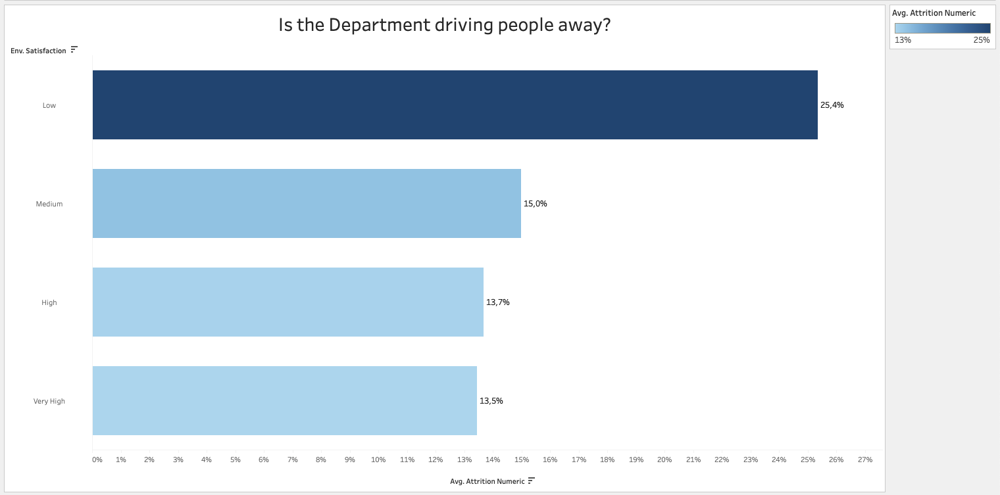
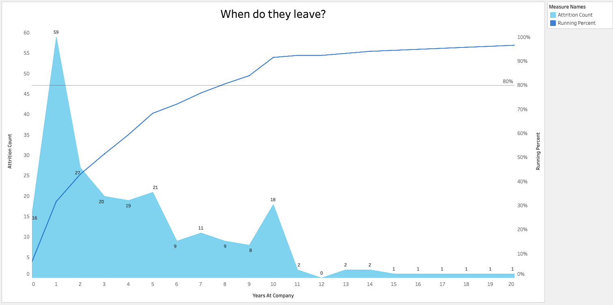
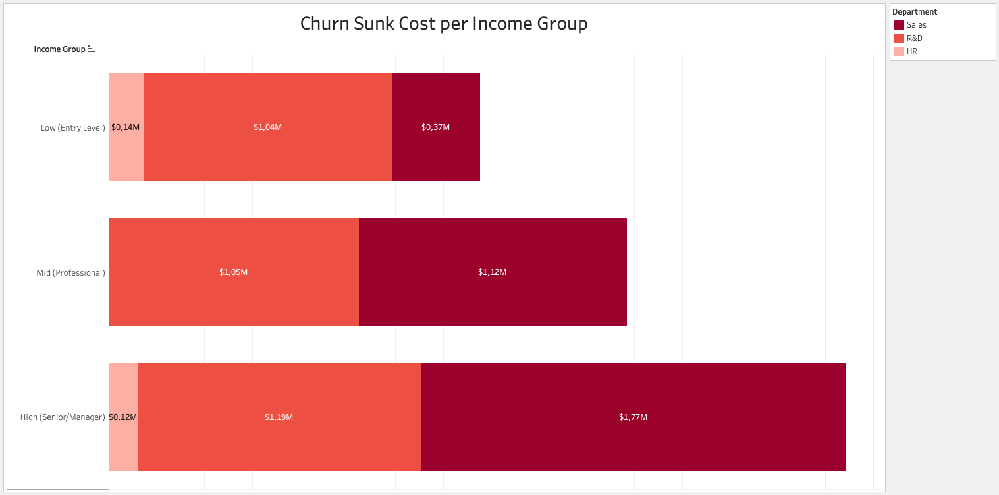
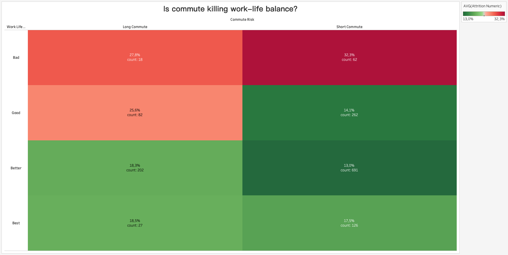

01 · The Problem
Employee attrition is consistently underestimated as a business risk. The visible cost — a vacancy — is only the starting point. The real cost includes productivity loss during the gap, onboarding overhead for the replacement, and the erosion of institutional knowledge that is never formally documented.
Without a structured analysis, organizations treat attrition reactively — responding to departures rather than preventing them. Retention budgets get allocated based on assumption, not evidence. The question that needs an answer is not just “who left?” but “why, when, how much did it cost, and which segment do we address first?”
02 · The Analytical Approach
The starting point was not the data — it was the decisions the business needed to make. I structured the analysis around four precise business questions, each designed to produce a finding an HR director or CFO could act on directly:
- Who is leaving? — Which income group & department generates the highest churn cost, and where should budget be allocated first?
- When do they leave? — At what tenure milestone does attrition peak? Is this a retention problem or an onboarding problem?
- Why — Environment? — Does low environmental satisfaction predict departure? Can cultural interventions reduce attrition independently of pay?
- Why — Lifestyle? — Does commute distance compound work-life imbalance into a predictable, quantifiable attrition risk?
03 · The Four Views
Each visualization was built to surface one decision-relevant finding. The visual encoding (color intensity, Pareto curves, heatmap saturation) communicates severity and priority — not just pattern. The dashboard is designed for exploration by non-analysts: a CFO or HR Director can filter by department or income group and immediately see where the cost is concentrated.




04 · Live Interactive Dashboard
The full dashboard brings all four views together with cross-filter interactivity — selecting a department or income group updates every chart simultaneously. It is designed for executive presentation: filter by department or years at company to drill into the specific segments that carry the highest attrition risk.

Interactive · Filter by department, tenure, income group
Open Full Dashboard ↗05 · Key Findings & Takeaway
80% of leavers exit within their first 5 years, with attrition peaking at Year 1 (59 employees). This reframes the problem: it is an onboarding and early-tenure risk before it becomes a general retention issue. The intervention point is the first 12 months, not an organization-wide culture change.
Low environmental satisfaction produces a 25.4% attrition rate — nearly double high-satisfaction environments. The highest single financial exposure sits in Senior/Manager Sales roles ($1.77M sunk cost) where replacing one person carries disproportionate knowledge and relationship risk.